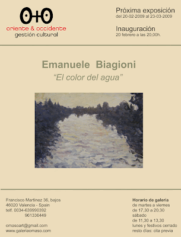
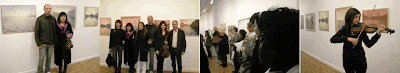
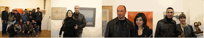

"El color del agua": Exposición del 20-02 al 23-03-2009
viernes, 20 de febrero de 2009
{kind=link}

Emanuelle Biagioni: "El color del agua"
La Galería O +O tiene el placer de presentar la primera exposición individual de Emanuelle Biagioni (1973, Barga, Italia) en España. Bajo el título “El color del agua” el artista italiano nos ofrece una variada colección de paisajes realizados al óleo con un nexo de unión: el agua. Esta exposición, que podrá disfrutarse del 20 de febrero al 23 de marzo de 2009, ha sido posible gracias a la colaboración entre Oriente y Occidente Gestión Cultural y Galería italiana Tartaglia Arte.
{kind=link}

{kind=link}

Biagioni seducido por la belleza de la naturaleza y sus colores, representa el mar, la playa, los canales, la vegetación… y a la distancia suele mostrar la ciudad como telón de fondo, en la sombra acechando aparecen los perfiles de diferentes construcciones. La Naturaleza en primer término deja vislumbrar entre neblinas los contornos de la ciudad. Un paisaje y una ciudad en la que la figura del hombre apenas existe, en contadas ocasiones vemos alguna figura pasear o en una barca. El único referente al ser humano que aparece son las construcciones realizadas por su mano, arquitecturas difuminadas que modifican ese paisaje poético. La calma y la pausa se adueñan de todo, lugares rodeados de un aura de lejanía y atemporalidad.
Para su obra el artista italiano se adueña de la técnica impresionista pintada como antaño al óleo sobre lienzo, recordándonos a grandes maestros de la pintura como Monet, Sisley, Pissarro y Van Gogh. Si algo identifica la pintura impresionista es el paisaje, un estudio de la naturaleza como pretexto para investigar los cambios de luz y color en diferentes lugares y tiempo. Con una pincelada vibrante cargada de color y llena de dulzura, crea un mundo lleno de matices donde el “color del agua” toma el protagonismo: aguas verdosas, amarillentas, azuladas, anaranjadas… agua de nieve, de lluvia… agua en calma, rompiendo olas… Un juego de reflejos en este espejo natural donde el cielo y la vegetación se confunden sin saber dónde empieza uno y acaba el otro. Efectos de luz con el color amarillo como constante en una obra en la que en muchas ocasiones se encuentra bañada por la luz del sol. Un instante único de luz y color.
(Oscar García)